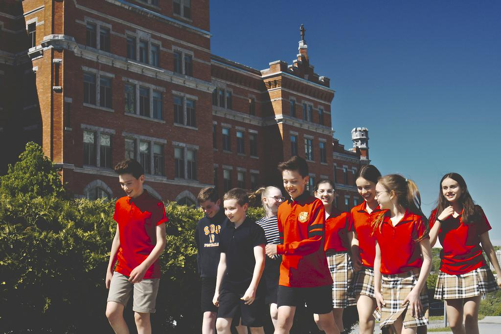
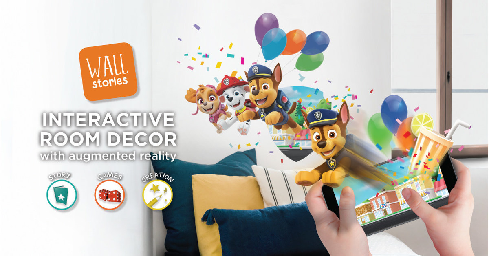

Étienne Letarte
Programmeur
Speak English? Click here.
Mes projets
Jeux-vidéos
Aerodynamic
Collège Bart
Au collège Bart, chaque élève avait un projet à faire qui était sensé émuler une production complète, mais nous n'avions que 2 sessions (25 semaines) pour le compléter. Mon projet, Aerodynamic, est un platformer basé sur la physique qui demande une grande précision au joueur. Celui-ci peut bouger les bras du personnage avec la souris et se déplacer avec WASD. Ce fut ma première expérience de programmation d'un jeu-vidéo complet.
Unity3D (C#)
Hinge Joints
Physics-based
Projet de JRPG
Collège Bart
Ce projet dans le style d'un Japanese RPG a été fait dans le cadre d'un cours au collège Bart. Le jeu contient un système de déplacement complet, des interactions avec la carte et des combats dans le même style que Final Fantasy.
Unity 2D (C#)
Queues
Grid-based
Tiled
Programmation
Gestion des vendredis
Cégep de Sherbrooke En 2020, pendant ma Technique de l'informatique, j'ai dû, dans une équipe de 4, livrer un logiciel pour une vraie entreprise. Un de mes coéquipiers était employé au au Séminaire de Sherbrooke, et ceux-ci avaient besoin d'un système pour gérer les activités du vendredi de leurs élèves. Notre logiciel, codé en PHP (Laravel), permettait de faire une gestion d'horaire, de localiser des covoitureurs, et de discuter avec eux dans le site web.
PHP Laravel
OpenMap
Twilio
Gestion
Application mobile WallStories
Quinco & Cie En 2021, lorsque j'étais programmeur chez Quinco & Cie, j'ai dû contribuer à leur nouvelle application mobile nommée WallStories. Les clients achètent un autocollant WallStories en magasin, et le colle à un mur de de la maison. Ensuite, ils téléchargent l'app et activent le sticker avec son code d'activation. Le sticker se met à s'animer sur le mur en utilisant Vuforia, une technologie de réalité augmentée. J'ai contribué au contenu de l'application, et j'ai livré des mises à jour en fin 2021.
Unity3D (C#)
Mobile
AssetBundles
Vuforia